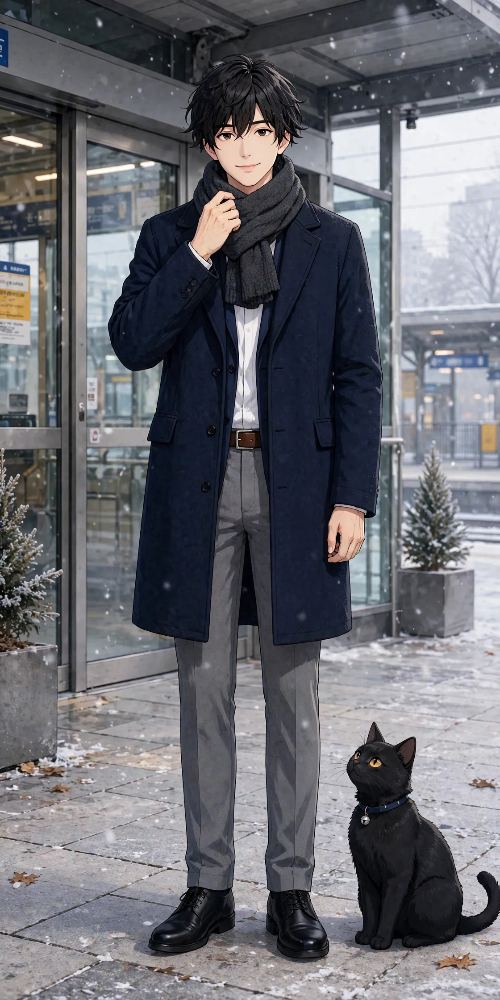

冬の首元防寒と見た目｜マフラー・ネックウォーマーの選び方（40代）

ノクス：首元が寒いと、肩が上がって猫背に見えるにゃ。
この記事の商品（先に比較）
| 商品 | 価格（税込） | お店 |
|---|---|---|
| タイオン シティダウンマフラー | 3,960円 | GLOBER |
| タイオン ミリタリーダウンマフラー | 3,960円 | GLOBER |
| タイオン シティダウンネックウォーマー | 3,960円 | GLOBER |
| タイオン ミリタリーダウンネックウォーマー | 3,960円 | GLOBER |
| タイオン ミリタリーソフトシェルネックウォーマー | 3,960円 | GLOBER |
| タイオン ベーシックダウンマフラー | 3,960円 | GEOGRAPHY／ジェオグラフィー |
| ナンガ ポータブルライトダウンマフラー | 5,940円 | スポーツマリオ |
| コロンビア フリースネックゲイター | 2,277円 | ice field（アイスフィールド） |
| チャムス エルモネックウォーマー | 6,380円 | ジーンズ＆カジュアル -アーベン- |
| ノースフェイス リバーシブルネックゲイター | 7,227円 | mischief シューズ＆アパレル |
| ポロラルフローレン リバーシブルマフラー | 10,780円 | 腕時計のななぷれ |
| ヴィヴィアン・ウエストウッド リバーシブルマフラー | 16,500円 | GLANCEED（グランシード） |
| デンチョウ カシミヤ100%ネックウォーマー | 3,800円 | アルパカ シルク 国産店デンチョウ |
価格は2026年11月27日に確認したものです。今回の13点は、マフラー6点とネックウォーマー・ゲイター7点で、2,277円から16,500円の範囲です。一番レビューが集まっているのは、デンチョウのカシミヤ100%ネックウォーマーで674件・★4.67です。セールやクーポンで変わることがあります。
基準1：形で選ぶ（マフラー／ネックウォーマー／ゲイター）
冬の首元防寒は、まず形で選びます。マフラーは、巻き方で印象を変えられるのが一番の特徴です。長さが80cm以上のものなら、ワンループ巻きやプレーンノットなど、いろいろな巻き方ができます。今回の商品では、タイオンのシティダウンマフラーが全長89cm・幅19cmで、リバーシブルのダウンです。ヴィヴィアン・ウエストウッドのリバーシブルマフラーは184cmのゆったりサイズで、巻き方のアレンジがしやすくなっています。ネックウォーマーは、かぶるだけで首元を覆えるので、着脱が楽です。朝の忙しい時間や、電車の乗り降りで何度も着け外しする人に向いています。タイオンのシティダウンネックウォーマーとミリタリーダウンネックウォーマーは、800FPダウンのリバーシブルで、裏側はマイクロボアです。ミリタリーの方はYKKスナップボタン付きで、ボタンで留め外しできます。ゲイターは、ネックウォーマーとほぼ同じ形で、首元を筒状に覆うものです。コロンビアのフリースネックゲイターは2,277円で、MTRフリースの定番モデルです。ノースフェイスのリバーシブルネックゲイターはジップ付きで、帽子をかぶったまま着脱できると説明されています。形を選ぶときは、通勤の動線を考えてください。電車と徒歩が多い人は、着脱の楽なネックウォーマーやゲイターが向いています。オフィスで外す場面が多い人は、マフラーの方が、たたんでバッグに入れやすくなります。
基準2：素材と暖かさ（ダウン・カシミヤ・ウール・フリース）
首元の暖かさは、素材でほぼ決まります。ダウンは、軽くて暖かいのが特徴です。タイオンのダウンシリーズは、800FPダウンを使っていて、6点とも3,960円です。シティとミリタリーの2つのラインがあり、シティは上品な仕上げ、ミリタリーはリップストップ生地の仕上げです。ナンガのポータブルライトダウンマフラーは、リサイクルダウンの超軽量タイプで、約34gと説明されています。5,940円で、パッカブル（小さくたためる）ので、バッグに入れて持ち運べます。カシミヤは、肌ざわりがやさしく、薄手でも暖かいのが特徴です。デンチョウのカシミヤ100%ネックウォーマーは3,800円で、新潟の自社工場製、手洗いができると説明されています。ウールは、保温性が高く、ビジネスにも合う素材です。ポロラルフローレンのリバーシブルマフラーは、ウール80%のイタリア製で10,780円、モデルにより価格が異なると説明されています。ヴィヴィアン・ウエストウッドのリバーシブルマフラーは、ウール100%のオーブ柄ジャカードで16,500円、並行輸入品と説明されています。フリースは、手入れが楽で、洗えるものが多いです。コロンビアのフリースネックゲイターは、保温性が長く続くと説明されています。チャムスのエルモネックウォーマーは、GORE-TEX INFINIUMの防風タイプで、裏面はボアフリースのリバーシブル仕様です。6,380円で、防風性があるので、自転車通勤の人にも向いています。素材を選ぶときは、チクチクしないかどうかも確認してください。ウールやカシミヤは、肌に直接当たるので、チクチクするものは首元がかゆくなります。レビューで肌ざわりの感想を確認するのがおすすめです。
基準3：色とコート・スーツとの合わせ方
首元の防寒具は、コートやスーツの色と合わせることで、全体の印象が決まります。基本は、グレー・ネイビー・黒の無地です。どんな色のコートやスーツにも合います。今回の商品では、タイオンのシティダウンマフラーが、ブラック・オフホワイト・ダークネイビー・オリーブ・ダークチャコールなど、7色の色展開があります。コートが紺なら、グレーのマフラーを合わせると、首元が明るく見えます。コートが黒なら、ネイビーやチャコールのマフラーを合わせると、重くなりすぎません。柄は、控えめなものがビジネスには向いています。ポロラルフローレンのリバーシブルマフラーは、ポニー刺繍がアクセントで、チェックや無地が選べます。ヴィヴィアン・ウエストウッドのリバーシブルマフラーは、オーブ柄ジャカードで、少しだけ個性があります。派手すぎる柄は、スーツの場には合いにくいので、休日のカジュアルな服装に合わせるのがおすすめです。色と柄を選ぶときは、合わせるコートの色も考えてください。コートの色とマフラーの色が同じだと、首元がぼんやり見えることがあります。コートとマフラーの色を、少しだけ変えると、首元が引き締まって見えます。ネックウォーマーは、マフラーより色の面積が小さいので、少し明るい色を選んでも、全体がまとまりやすくなります。
あえて推さないもの
- 首元を覆えない短いもの（首元の防寒にならず、ただの飾りになってしまいます。マフラーは80cm以上が目安です）
- チクチクする素材のもの（肌に直接当たるので、首元がかゆくなります。レビューで肌ざわりを確認してください）
- 派手すぎる柄のもの（スーツの場には合いにくいです。休日のカジュアルな服装に合わせてください）
- 洗えない・手入れが難しいものを、毎日使う前提で選ぶこと（通勤で毎日使うものは、洗えるかどうかを確認してください）
- 重すぎるもの（首に負担がかかって、肩が凝りやすくなります。軽いものを選んでください）
巻き方のコツ（ワンループ・プレーンノット・襟元）
マフラーは、巻き方で見え方が大きく変わります。基本の巻き方は、ワンループ巻きです。マフラーを首に一周させて、片方の端をループに通す巻き方で、首元が暖かく、ほどけにくいです。プレーンノットは、マフラーを首にかけて、片方の端をもう片方の端に結ぶ巻き方で、すっきりした印象になります。スーツの襟元に合わせるときは、マフラーをコートの襟の内側に入れるのが基本です。コートの襟の外側にマフラーを出すと、首元がもたついて見えることがあります。ネックウォーマーは、かぶるだけで首元を覆えます。スーツの襟元に合わせるときは、ネックウォーマーの上端を、シャツの襟のすぐ下に合わせると、すっきり見えます。巻き方に迷ったら、ワンループ巻きから始めてみてください。首元が暖かく、ほどけにくいので、通勤の基本形としておすすめです。マフラーの巻き方は、鏡で横からも確認してください。後ろから見たときに、マフラーの端がバラバラになっていないか確認しておくと安心です。
お手入れ（洗えるか・陰干し・毛玉）
冬の首元防寒具は、毎日使うものだからこそ、お手入れの仕方が大事です。洗えるかどうかは、商品ページの洗濯表示で確認してください。タイオンのベーシックダウンマフラーは、裏地フリースで洗濯ができると説明されています。デンチョウのカシミヤ100%ネックウォーマーは、手洗いができると説明されています。ダウンのものは、洗濯機で洗えるものもありますが、洗濯表示をよく見てください。ウールやカシミヤのものは、手洗いかドライクリーニングが基本です。洗ったあとは、陰干ししてください。直射日光で干すと、色あせや縮みの原因になります。毛玉ができたら、毛玉取り器で軽く取ってください。毛玉を引っ張って取ると、生地が傷みます。シーズンの終わりに洗ってからしまうと、次のシーズンも気持ちよく使えます。マフラーは、使わないときは、たたんで引き出しにしまうのが基本です。ハンガーにかけると、重みで伸びてしまうことがあります。
持ち運びと収納（パッカブル・軽さ）
通勤で使う首元防寒具は、オフィスに着いたら外すので、持ち運びのしやすさも大事です。パッカブル（小さくたためる）ものは、バッグに入れて持ち運べます。ナンガのポータブルライトダウンマフラーは、約34gでパッカブルと説明されています。電車の中で外したあと、バッグに入れておけるので、荷物になりません。ネックウォーマーは、マフラーよりかさばらないので、バッグのポケットに入れておけます。コートのポケットに入れておくと、電車を降りたときにすぐ着けられます。重さも確認してください。ウール100%のマフラーは、暖かい反面、重さがあります。ヴィヴィアン・ウエストウッドのリバーシブルマフラーは184cmのゆったりサイズで、重さを感じることがあります。首に負担がかかると、肩が凝りやすくなります。軽いものを選ぶときは、ダウンやカシミヤの薄手のものが向いています。持ち運びのしやすさは、商品ページの重さの表示で確認してください。重さの表示がないものは、レビューで軽さの感想を確認するのがおすすめです。
この記事の基準に合う商品
特徴：冬の首元防寒13点。タイオンのダウンシリーズ6点、ナンガ・コロンビア・チャムス・ノースフェイスのアウトドア系4点、ポロ・ヴィヴィアン・デンチョウのウール・カシミヤ系3点。価格は2026年11月27日に確認したものです。サイズ・モデルにより価格が変わるものがあります。


タイオン ミリタリーソフトシェルネックウォーマー
800FPダウンのリバーシブルネックウォーマー。ヘチマキルト＋裏側ボアのソフトシェル仕様
★4.33（レビュー3件）
3,960円（税込）
GLOBER

タイオン ベーシックダウンマフラー
裏地フリースのベーシックダウンマフラー。ビジネスにも使えるシンプルなデザインで洗濯可
★4.83（レビュー12件）
3,960円（税込）
GEOGRAPHY／ジェオグラフィー


コロンビア フリースネックゲイター
MTRフリースのネックゲイター。保温性が長く続く定番モデル。メール便送料250円は別途
★4.88（レビュー8件）
2,277円（税込）
ice field（アイスフィールド）

チャムス エルモネックウォーマー
GORE-TEX INFINIUMの防風ネックウォーマー。裏面はボアフリースのリバーシブル仕様
★4.5（レビュー2件）
6,380円（税込）
ジーンズ＆カジュアル -アーベン-


ヴィヴィアン・ウエストウッド リバーシブルマフラー
ウール100%のリバーシブルマフラー。オーブ柄ジャカードで184cmのゆったりサイズ。並行輸入品
16,500円（税込）
GLANCEED（グランシード）

デンチョウ カシミヤ100%ネックウォーマー
カシミヤ100%の薄手ネックウォーマー。新潟の自社工場製で手洗いできる
★4.67（レビュー674件）
3,800円（税込）
アルパカ シルク 国産店デンチョウ
あわせて読みたい：アウター種類別ガイド／冬のアウターの選び方／猫背でジャケットが決まらない人のアウターの選び方／デスクワーク後の首・肩のこわばりリセット